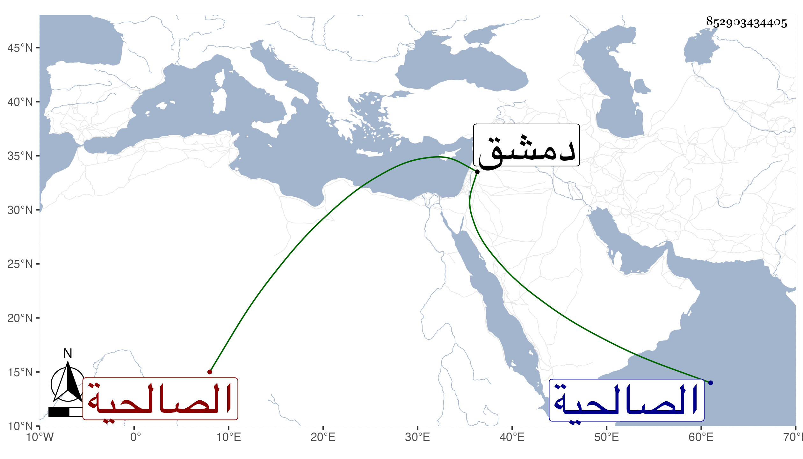

0902Sakhawi.DawLamic.ITO20230111-ara1.EIS1600.852903434405
Biography ID: 852903434405
146
خديجة ابنة أبي بكر بن علي بن أبي بكر بن عبد الملك الصالحية ابنة الكوري . سمعت من محمد بن يوسف الحراني المسلسل ومن زينب ابنة الكمال موافقاتها وحدثت بها سمعهما منها شيخنا وذكرها في معجمه وقال ماتت في حصار دمشق سنة ثلاث ؛ وتبعه المقريزي في عقوده .
